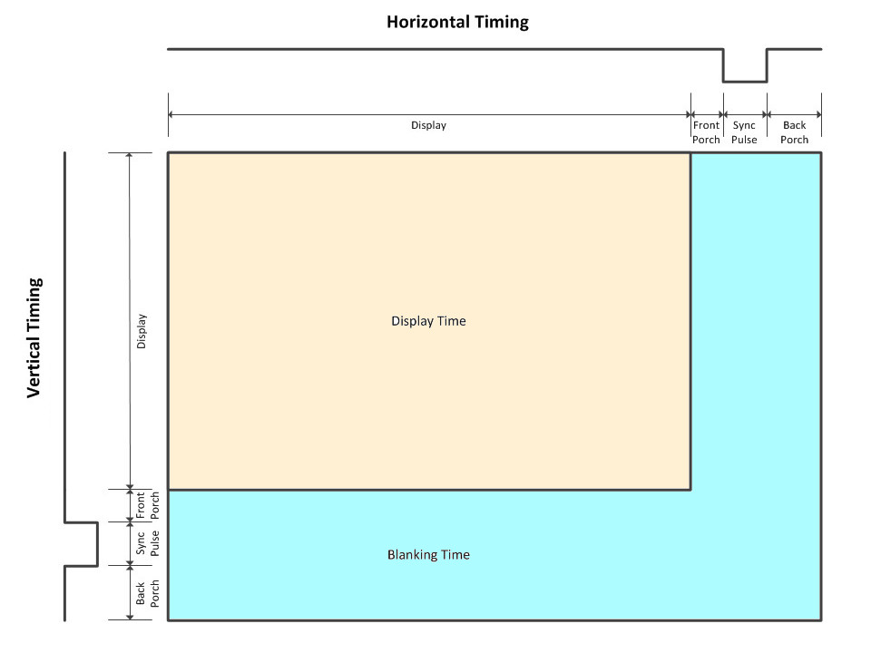
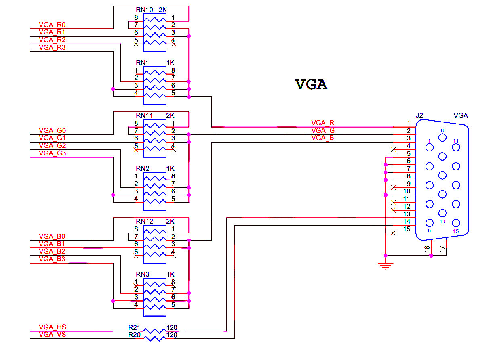
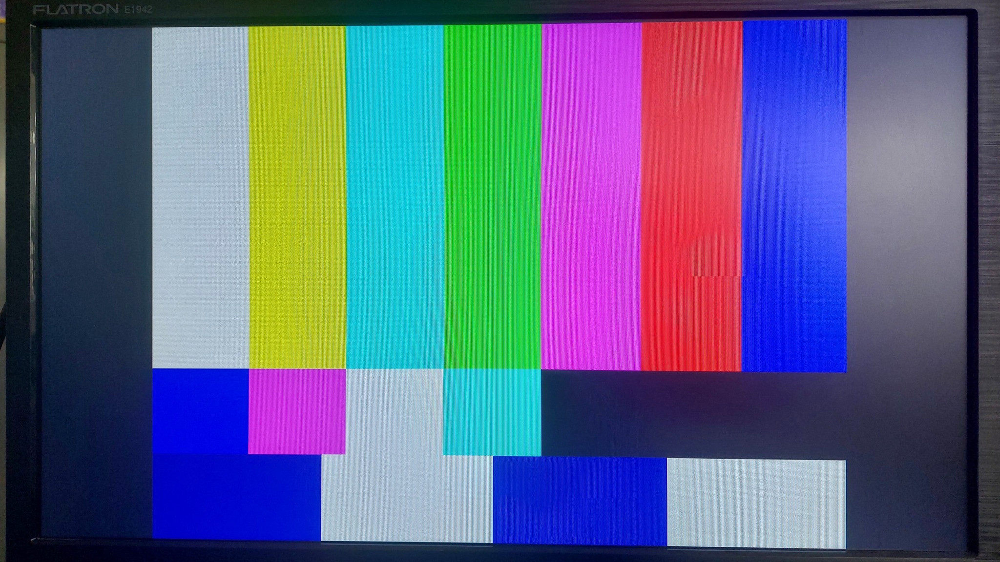
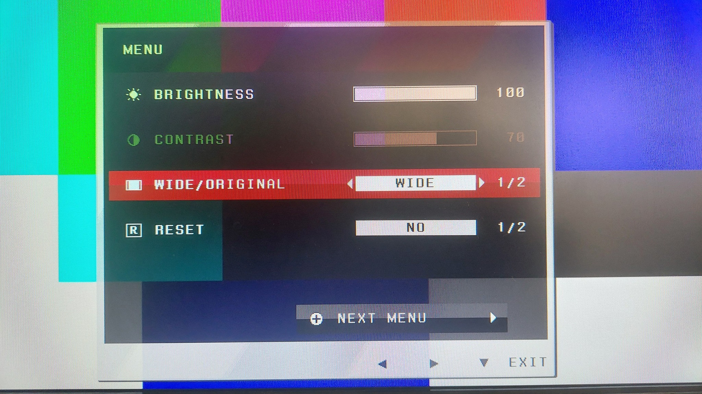
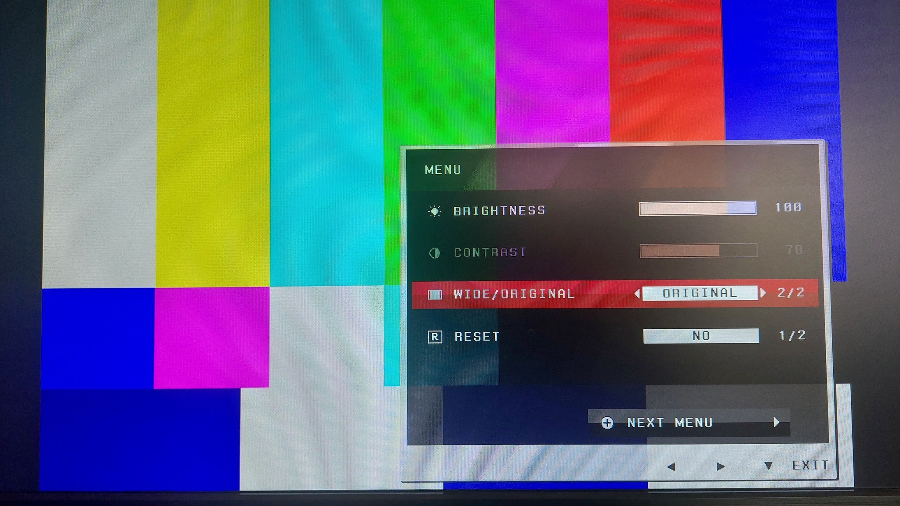
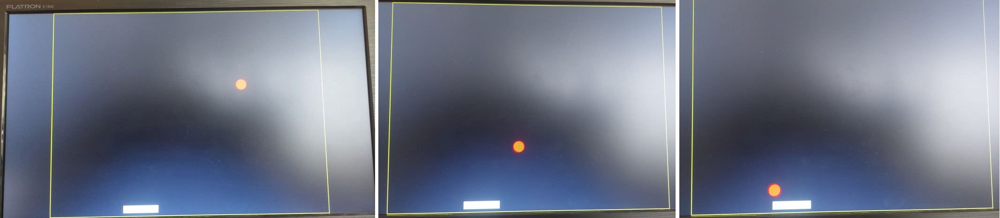

Tutorial: VGA Display Output Testing on the DE10 Lite FPGA Board#
- VGA Display
- Signal Timing Specifications
- Examples of VGA Timing Specs
- VGA Interface on DE10 Lite FPGA Board
- VGA Controller Implementation
- VHDL Code Example for VGA Display Testing
- FPGA Pong Game
VGA Display#
VGA (Video Graphics Array) is a graphics transmission standard originally designed for CRT monitors and later used with LCD displays. Today, the use of VGA has declined and it has largely been replaced by newer standards such as DVI-D and HDMI.
VGA works by scanning the display line by line from left to right (horizontal scan)
and from top to bottom (vertical scan), using a combination of RGB signals together
with HSYNC and VSYNC synchronization pulses.
VGA Signals#
- Horizontal Sync (
HSYNC, digital, active-low): A synchronization pulse that defines the timing for each horizontal line on the display. - Vertical Sync (
VSYNC, digital, active-low): A synchronization pulse that defines the timing for a new frame, starting from the top of the screen. - RGB values (analog signals for red, green, and blue): These signals define the color value of each pixel. For example: With 4 bits per channel (R, G, B), the display can produce colors. With 8 bits per channel, it can produce colors.
Signal Timing Specifications#
The VGA timing specification is critical for proper image display. It is divided into horizontal and vertical timing requirements:
- Horizontal Timing (per line, left to right):
- Horizontal Visible Area (Active Video): The period when actual pixel data is displayed.
- Front Porch: A short interval after the visible pixels and before the
HSYNCpulse. - HSYNC Pulse (active-low): The synchronization period that signals the start of the next line.
- Back Porch: The interval after
HSYNC, not visible, allowing the display to prepare new pixel data.
- Vertical Timing (per frame, top to bottom):
- Vertical Visible Area (Active Video): The period when the full frame of pixels is displayed.
- Front Porch: The interval after all lines of a frame have been displayed and before the
VSYNCpulse. - VSYNC Pulse (active-low): The synchronization signal that marks the start of a new frame at the top of the screen.
- Back Porch: The interval after
VSYNC, not visible, allowing the display to prepare for the next frame.

Figure: VGA Signal Timing
Examples of VGA Timing Specs#
The tables below present the VGA timing specifications for the 640×480 and 800×600 resolutions.
1) VGA Timing Spec for 640x480, Frame Refresh Rate = 60Hz (Pixel Clock = ~25.2MHz)
| Timing Parameter | Horizontal (Pixels) | Vertical (Lines) |
|---|---|---|
| Active Video | 640 | 480 |
| Front Porch | 16 | 10 |
| Sync Pulse | 96 | 2 |
| Back Porch | 48 | 33 |
| Total Period | 800 | 525 |
2) VGA Timing Spec for 800x600, Frame Refresh Rate = 72Hz (Pixel Clock = ~50 MHz)
| Timing Parameter | Horizontal (Pixels) | Vertical (Lines) |
|---|---|---|
| Active Video | 800 | 600 |
| Front Porch | 56 | 37 |
| Sync Pulse | 120 | 6 |
| Back Porch | 64 | 23 |
| Total Period | 1040 | 666 |
VGA Interface on DE10 Lite FPGA Board#
From the circuit diagram, it can be seen that there is a D-Sub (15-pin) connector for VGA. In addition, an R-2R resistor ladder DAC is used to convert a 4-bit digital signal into an analog signal for each color channel (R, G, B).

Figure: Resistor Network and D-Sub (15-pin) Connector for VGA
VGA Controller Implementation#
The main function of a VGA controller is to generate the horizontal and vertical synchronization signals (HSYNC and VSYNC). In addition, it maintains counters that define the pixel coordinates (x and y) on the display and provides a signal indicating whether the current position is within the active display area or during the blanking period.
Typically, the VGD controller has the inputs and outputs:
- Clock (input):
- This is the pixel clock. It defines how fast pixels are output to the display.
- Every rising edge of this clock advances the x counter (horizontal pixel position).
- Reset (input):
- This signal resets the counters and sync generator back to the initial state.
- HSYNC (output):
- It is a pulse that signals the end of each horizontal line. The monitor uses this to know when to return the pixel index (in LCDs) to the start of the next line.
- VSYNC (output):
- A pulse that signals the end of a frame (all lines displayed). The monitor uses this to know when to start the next frame from the top-left corner.
- Active Area (output):
- A logical signal that is high when the current (x, y) is inside the visible display area.
- Pixel Counter for x and y direction (output):
- The horizontal pixel counter (x) runs from 0 up to total pixels per line.
- The vertical line counter (y) runs from 0 up to total lines per frame.
- The (x,y) pixel counter gives the current pixel position in the raster scan.
VHDL Code Example for VGA Display Testing#
This VHDL code implements a VGA test signal generator, which will be tested on the DE10 Lite FPGA board.
The VHDL process rgb_gen_proc generates the pixel color values
(4-bit each for R, G, and B) based on the current pixel position (h_count, v_count).
This creates a test pattern image on the VGA display. The screen is divided vertically into three main regions:
- Top 2/3: Seven vertical color bars (white, yellow, cyan, green, magenta, red, blue).
- Middle stripe: A black background with small colored patches.
- Bottom row: Alternating dark blue and white rectangles
LIBRARY IEEE;
USE IEEE.STD_LOGIC_1164.ALL;
USE IEEE.NUMERIC_STD.ALL;
ENTITY de10lite_vga_demo IS
PORT (
clk : IN STD_LOGIC; -- 50 MHz
reset_n : IN STD_LOGIC; -- async. reset (active-low)
vga_hs : OUT STD_LOGIC; -- VGA HSYNC output
vga_vs : OUT STD_LOGIC; -- VGA VSYNC output
vga_r, vga_g, vga_b : OUT STD_LOGIC_VECTOR(3 DOWNTO 0) -- RGB
);
END de10lite_vga_demo;
ARCHITECTURE behavioral OF de10lite_vga_demo IS
-- VGA timing constants (800x600@72Hz)
CONSTANT H_ACTIVE_AREA : INTEGER := 800;
CONSTANT V_ACTIVE_AREA : INTEGER := 600;
CONSTANT H_FRONT_PORCH : INTEGER := 56;
CONSTANT H_SYNC_PULSE : INTEGER := 120;
CONSTANT H_BACK_PORCH : INTEGER := 64;
CONSTANT H_TOTAL : INTEGER := H_ACTIVE_AREA + H_FRONT_PORCH
+ H_SYNC_PULSE + H_BACK_PORCH;
CONSTANT V_FRONT_PORCH : INTEGER := 37;
CONSTANT V_SYNC_PULSE : INTEGER := 6;
CONSTANT V_BACK_PORCH : INTEGER := 23;
CONSTANT V_TOTAL : INTEGER := V_ACTIVE_AREA + V_FRONT_PORCH
+ V_SYNC_PULSE + V_BACK_PORCH;
SIGNAL h_count, v_count : INTEGER := 0;
SIGNAL visible_area : STD_LOGIC := '0';
SIGNAL vga_clk : STD_LOGIC := '0';
SIGNAL hsync, vsync : STD_LOGIC := '1';
BEGIN
vga_clk <= clk; -- use 50MHz for VGA clock
-- Horizontal / vertical (x,y) counters
vga_sync_proc : PROCESS (vga_clk, reset_n)
BEGIN
IF reset_n = '0' THEN
h_count <= 0;
v_count <= 0;
ELSIF rising_edge(vga_clk) THEN
IF h_count = H_TOTAL - 1 THEN
h_count <= 0;
IF v_count = V_TOTAL - 1 THEN
v_count <= 0;
ELSE
v_count <= v_count + 1;
END IF;
ELSE
h_count <= h_count + 1;
END IF;
END IF;
END PROCESS;
visible_area <= '1' WHEN (h_count < H_ACTIVE_AREA AND v_count < V_ACTIVE_AREA)
ELSE '0';
-- Generate syncs
hsync <= '0' WHEN (h_count >= H_ACTIVE_AREA + H_FRONT_PORCH AND
h_count < H_ACTIVE_AREA + H_FRONT_PORCH + H_SYNC_PULSE)
ELSE '1';
vsync <= '0' WHEN (v_count >= V_ACTIVE_AREA + V_FRONT_PORCH AND
v_count < V_ACTIVE_AREA + V_FRONT_PORCH + V_SYNC_PULSE)
ELSE '1';
-- Create registered HSYNC and VSYNC signal for output
PROCESS (vga_clk)
BEGIN
IF rising_edge(vga_clk) THEN
vga_hs <= hsync;
vga_vs <= vsync;
END IF;
END PROCESS;
--------------------------------------------------------------------------
-- Test pattern: defines the R,G,B values based on v_count and h_count
--------------------------------------------------------------------------
rgb_gen_proc: PROCESS (vga_clk)
VARIABLE r_value, g_value, b_value : STD_LOGIC_VECTOR(3 DOWNTO 0);
CONSTANT bar_w : INTEGER := H_ACTIVE_AREA / 7; -- 7 color bars
BEGIN
IF rising_edge(vga_clk) THEN
r_value := "0000"; g_value := "0000"; b_value := "0000"; --default
IF visible_area = '1' THEN
-- Divide vertically: top 2/3, middle stripe, bottom rectangles
IF v_count < (V_ACTIVE_AREA * 2 / 3) THEN
-- Top 2/3 of screen: 7 color bars
CASE (h_count / bar_w) IS
WHEN 0 => r_value := "1111";
g_value := "1111";
b_value := "1111"; -- White
WHEN 1 => r_value := "1111";
g_value := "1111";
b_value := "0000"; -- Yellow
WHEN 2 => r_value := "0000";
g_value := "1111";
b_value := "1111"; -- Cyan
WHEN 3 => r_value := "0000";
g_value := "1111";
b_value := "0000"; -- Green
WHEN 4 => r_value := "1111";
g_value := "0000";
b_value := "1111"; -- Magenta
WHEN 5 => r_value := "1111";
g_value := "0000";
b_value := "0000"; -- Red
WHEN OTHERS =>
r_value := "0000";
g_value := "0000";
b_value := "1111"; -- Blue
END CASE;
ELSIF v_count < (V_ACTIVE_AREA * 5 / 6) THEN
-- Middle stripe: black background with small colored patches
r_value := "0000";
g_value := "0000";
b_value := "0000"; -- default black
CASE (h_count / bar_w) IS
WHEN 0 => r_value := "0000";
g_value := "0000";
b_value := "1111"; -- small blue
WHEN 1 => r_value := "1111";
g_value := "0000";
b_value := "1111"; -- magenta
WHEN 2 => r_value := "1111";
g_value := "1111";
b_value := "1111"; -- white patch
WHEN 3 => r_value := "0000";
g_value := "1111";
b_value := "1111"; -- cyan patch
WHEN OTHERS => null;
END CASE;
ELSE
-- Bottom row: alternating dark blue / white rectangles
IF ( (h_count / (H_ACTIVE_AREA/4)) MOD 2 = 0 ) THEN
r_value := "0000";
g_value := "0000";
b_value := "0111"; -- dark blue
ELSE
r_value := "1111";
g_value := "1111";
b_value := "1111"; -- white
END IF;
END IF;
END IF;
-- Create registered R,G,B signals for output
vga_r <= r_value;
vga_g <= g_value;
vga_b <= b_value;
END IF;
END PROCESS;
--------------------------------------------------------------------------
END behavioral
A Tcl script is provided to handle FPGA pin assignments on the DE10 Lite FPGA board.
#set_global_assignment -name DEVICE 10M50DAF484C7G
#set_global_assignment -name FAMILY "MAX 10"
set_instance_assignment -name IO_STANDARD "3.3-V LVTTL" -to *
set_instance_assignment -name IO_STANDARD "3.3 V Schmitt Trigger" -to reset_n
set_location_assignment PIN_P11 -to clk
set_location_assignment PIN_B8 -to reset_n
set_location_assignment PIN_P1 -to vga_b[0]
set_location_assignment PIN_T1 -to vga_b[1]
set_location_assignment PIN_P4 -to vga_b[2]
set_location_assignment PIN_N2 -to vga_b[3]
set_location_assignment PIN_W1 -to vga_g[0]
set_location_assignment PIN_T2 -to vga_g[1]
set_location_assignment PIN_R2 -to vga_g[2]
set_location_assignment PIN_R1 -to vga_g[3]
set_location_assignment PIN_AA1 -to vga_r[0]
set_location_assignment PIN_V1 -to vga_r[1]
set_location_assignment PIN_Y2 -to vga_r[2]
set_location_assignment PIN_Y1 -to vga_r[3]
set_location_assignment PIN_N3 -to vga_hs
set_location_assignment PIN_N1 -to vga_vs

Figure: Test pattern shown on a LCD monitor
When testing the VGA signal with an LCD monitor, make sure to use the original (1:1) mode setting, not the widescreen mode.


Figure: Changing from Widescreen to Original (1:1) Setting
FPGA Pong Game#
This VHDL code implements a simple Pong-style game featuring a single horizontal paddle and a circular ball. Each time the ball hits the paddle, a hit counter is incremented, and its value is displayed on a three-digit, seven-segment display.
Timing considerations:
- The VHDL process
rgb_gen_procgenerates the R, G, and B values for the VGA output. All calculations (such as the circle equation, comparisons, and other operations) are performed within the same clock cycle as the register update. - As a result, the critical path begins at the
h_countand v_countregisters, passes through the combinational logic (including comparators, adders, and multipliers), and ends at the input of thepixel_r,pixel_g, andpixel_b` registers. - This long combinational path can significantly affect timing closure and may make it difficult to meet the 50 MHz clock requirement unless the logic is simplified or pipelined.
LIBRARY IEEE;
USE IEEE.STD_LOGIC_1164.ALL;
USE IEEE.NUMERIC_STD.ALL;
ENTITY de10lite_vga_demo IS
PORT (
clk : IN STD_LOGIC; -- 50MHz for VGA
reset_n : IN STD_LOGIC;
move_left : IN STD_LOGIC;
move_right : IN STD_LOGIC;
vga_hs : OUT STD_LOGIC;
vga_vs : OUT STD_LOGIC;
vga_r, vga_g, vga_b : OUT STD_LOGIC_VECTOR(3 DOWNTO 0);
hex0 : OUT STD_LOGIC_VECTOR(7 DOWNTO 0);
hex1 : OUT STD_LOGIC_VECTOR(7 DOWNTO 0);
hex2 : OUT STD_LOGIC_VECTOR(7 DOWNTO 0)
);
END de10lite_vga_demo;
ARCHITECTURE behavioral OF de10lite_vga_demo IS
-- VGA timing constants
CONSTANT H_ACTIVE : INTEGER := 800;
CONSTANT V_ACTIVE : INTEGER := 600;
CONSTANT H_FP : INTEGER := 56;
CONSTANT H_SYNC : INTEGER := 120;
CONSTANT H_BP : INTEGER := 64;
CONSTANT H_TOTAL : INTEGER := H_ACTIVE + H_FP + H_SYNC + H_BP;
CONSTANT V_FP : INTEGER := 37;
CONSTANT V_SYNC : INTEGER := 6;
CONSTANT V_BP : INTEGER := 23;
CONSTANT V_TOTAL : INTEGER := V_ACTIVE + V_FP + V_SYNC + V_BP;
SIGNAL h_count, v_count : INTEGER := 0;
SIGNAL visible_area : STD_LOGIC := '0';
SIGNAL hsync, vsync : STD_LOGIC := '1';
-- Paddle
CONSTANT PADDLE_WIDTH : INTEGER := 100;
CONSTANT PADDLE_HEIGHT : INTEGER := 12;
CONSTANT PADDLE_STEP : INTEGER := 5;
CONSTANT PADDLE_Y : INTEGER := V_ACTIVE - PADDLE_HEIGHT - 10;
-- The paddle’s x position changes when a move L/R button is pressed.
SIGNAL paddle_x : INTEGER := (H_ACTIVE - PADDLE_WIDTH)/2;
CONSTANT CLK_FREQ : INTEGER := 50000000; -- 50 MHz
CONSTANT PADDLE_CNT_MAX : INTEGER := CLK_FREQ / 50;
SIGNAL paddle_timer : INTEGER := 0;
-- Ball
SIGNAL ball_timer : INTEGER := 0;
SIGNAL ball_x, ball_y : INTEGER := 400;
SIGNAL ball_dx, ball_dy : INTEGER := 1;
CONSTANT BALL_SIZE : INTEGER := 16;
CONSTANT BALL_RADIUS : INTEGER := BALL_SIZE/2;
CONSTANT BALL_CNT_MAX : INTEGER := CLK_FREQ / 200;
-- Hit counter
SIGNAL hit_cnt : INTEGER RANGE 0 TO 999 := 0;
-- VGA RGB output
SIGNAL pixel_r, pixel_g, pixel_b : STD_LOGIC_VECTOR(3 DOWNTO 0)
:= (OTHERS => '0');
-- 7-segment BCD encoding
FUNCTION bcd_to_7seg(digit : IN INTEGER) RETURN STD_LOGIC_VECTOR IS
BEGIN
CASE digit IS -- Common anode
WHEN 0 => RETURN "11000000";
WHEN 1 => RETURN "11111001";
WHEN 2 => RETURN "10100100";
WHEN 3 => RETURN "10110000";
WHEN 4 => RETURN "10011001";
WHEN 5 => RETURN "10010010";
WHEN 6 => RETURN "10000010";
WHEN 7 => RETURN "11111000";
WHEN 8 => RETURN "10000000";
WHEN 9 => RETURN "10010000";
WHEN OTHERS => RETURN "11111111";
END CASE;
END FUNCTION;
BEGIN
-- VGA counters
PROCESS (clk, reset_n)
BEGIN
IF reset_n = '0' THEN
h_count <= 0;
v_count <= 0;
ELSIF rising_edge(clk) THEN
IF h_count = H_TOTAL - 1 THEN
h_count <= 0;
IF v_count = V_TOTAL - 1 THEN
v_count <= 0;
ELSE
v_count <= v_count + 1;
END IF;
ELSE
h_count <= h_count + 1;
END IF;
END IF;
END PROCESS;
visible_area <= '1' WHEN (h_count < H_ACTIVE AND v_count < V_ACTIVE)
ELSE '0';
hsync <= '0' WHEN (h_count >= H_ACTIVE + H_FP AND
h_count < H_ACTIVE + H_FP + H_SYNC)
ELSE '1';
vsync <= '0' WHEN (v_count >= V_ACTIVE + V_FP AND
v_count < V_ACTIVE + V_FP + V_SYNC)
ELSE '1';
PROCESS (clk)
BEGIN
IF rising_edge(clk) THEN
vga_hs <= hsync;
vga_vs <= vsync;
END IF;
END PROCESS;
-- Paddle control
PROCESS (clk, reset_n)
BEGIN
IF reset_n = '0' THEN
paddle_x <= (H_ACTIVE - PADDLE_WIDTH)/2;
paddle_timer <= 0;
ELSIF rising_edge(clk) THEN
IF paddle_timer < PADDLE_CNT_MAX - 1 THEN
paddle_timer <= paddle_timer + 1;
ELSE
paddle_timer <= 0;
IF move_left = '1' AND paddle_x > 0 THEN
paddle_x <= paddle_x - PADDLE_STEP;
ELSIF move_right = '1' AND paddle_x < H_ACTIVE-PADDLE_WIDTH THEN
paddle_x <= paddle_x + PADDLE_STEP;
END IF;
END IF;
END IF;
END PROCESS;
-- Ball movement
PROCESS (clk, reset_n)
VARIABLE next_x, next_y : INTEGER;
BEGIN
IF reset_n = '0' THEN
ball_timer <= 0;
ball_x <= H_ACTIVE/2;
ball_y <= V_ACTIVE/2;
ball_dx <= 1;
ball_dy <= 1;
hit_cnt <= 0;
ELSIF rising_edge(clk) THEN
IF ball_timer < BALL_CNT_MAX - 1 THEN
ball_timer <= ball_timer + 1;
ELSE
ball_timer <= 0;
-- next position
next_x := ball_x + ball_dx;
next_y := ball_y + ball_dy;
-- wall collision
IF next_x - BALL_RADIUS <= 0 OR
next_x + BALL_RADIUS >= H_ACTIVE
THEN
ball_dx <= - ball_dx;
next_x := ball_x + ball_dx;
END IF;
IF next_y - BALL_RADIUS <= 0 THEN
ball_dy <= - ball_dy;
next_y := ball_y + ball_dy;
END IF;
-- paddle collision
IF next_x + BALL_RADIUS > paddle_x AND
next_x - BALL_RADIUS < paddle_x + PADDLE_WIDTH AND
next_y + BALL_RADIUS > PADDLE_Y AND
next_y - BALL_RADIUS < PADDLE_Y + PADDLE_HEIGHT
THEN
ball_dy <= - ABS(ball_dy);
next_y := PADDLE_Y - BALL_RADIUS;
hit_cnt <= hit_cnt + 1;
END IF;
-- update ball
ball_x <= next_x;
ball_y <= next_y;
-- reset if miss
IF next_y - BALL_RADIUS > V_ACTIVE THEN
ball_x <= H_ACTIVE/2;
ball_y <= V_ACTIVE/2;
ball_dx <= 1;
ball_dy <= 1;
hit_cnt <= 0;
END IF;
END IF;
END IF;
END PROCESS;
-- VGA pixel generator
rgb_gen_proc: PROCESS (clk)
VARIABLE dx, dy : INTEGER;
BEGIN
IF rising_edge(clk) THEN
pixel_r <= "0000"; pixel_g <= "0000"; pixel_b <= "0000"; --default
IF visible_area = '1' THEN
-- paddle
IF h_count >= paddle_x AND
h_count < paddle_x + PADDLE_WIDTH AND
v_count >= PADDLE_Y AND
v_count < PADDLE_Y + PADDLE_HEIGHT
THEN
pixel_r <= "1111";
pixel_g <= "1111";
pixel_b <= "1111";
END IF;
-- ball (circle)
dx := h_count - ball_x;
dy := v_count - ball_y;
IF dx * dx + dy * dy <= BALL_RADIUS * BALL_RADIUS THEN
pixel_r <= "1111";
pixel_g <= "0000";
pixel_b <= "0000";
END IF;
-- frame
IF h_count = 0 OR h_count = H_ACTIVE - 1 OR
v_count = 0 OR v_count = V_ACTIVE - 1
THEN
pixel_r <= "1111";
pixel_g <= "1111";
pixel_b <= "0000";
END IF;
END IF;
END IF;
END PROCESS;
vga_r <= pixel_r;
vga_g <= pixel_g;
vga_b <= pixel_b;
-- HEX display (hit_cnt)
PROCESS (hit_cnt)
VARIABLE h0, h1, h2 : INTEGER;
BEGIN
h0 := hit_cnt MOD 10;
h1 := (hit_cnt/10) MOD 10;
h2 := (hit_cnt/100) MOD 10;
hex0 <= bcd_to_7seg(h0);
hex1 <= bcd_to_7seg(h1);
hex2 <= bcd_to_7seg(h2);
END PROCESS;
END behavioral;

Figure: FPGA Pong game demo
This work is licensed under a Creative Commons Attribution-ShareAlike 4.0 International License.
Created: 2025-09-25 | Last Updated: 2025-09-25